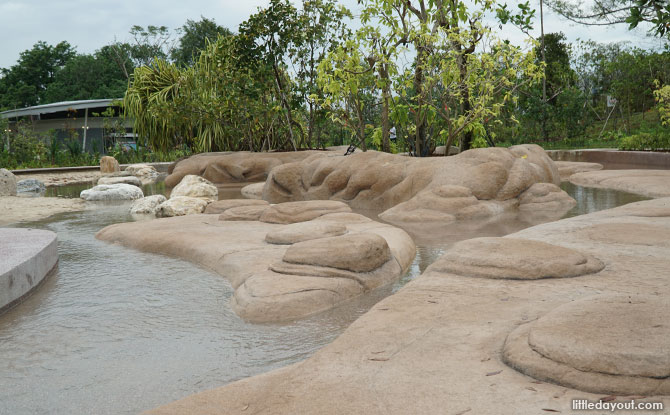
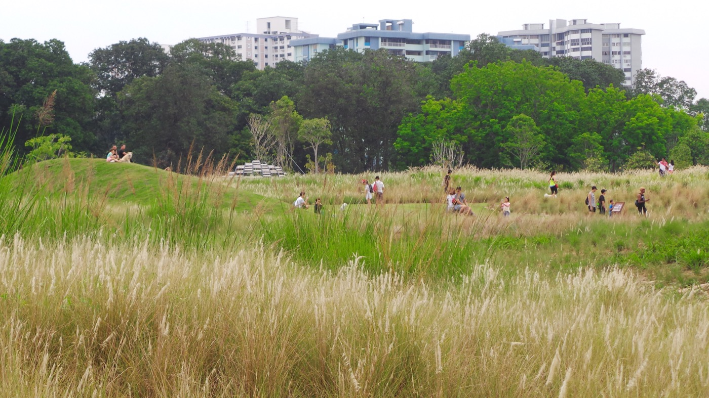

Featured Spots
Therapeutic Garden
In need of some stress relief? Look no further! Singapore's largest therapeutic garden can be found here, where you can experience a range of health benefits such as stress relief and an improvement to your emotional well-being .

Rasau Walk
This 300m long boardwalk brings you along the edge of Jurong Lake, with benches for you to relax and take in the scenery! Moreover, get upclose and personal with one of Singapore's restored freshwater swamps, where more than 50 plant species have also been planted. How many plants will you be able to identify?

Clusia Cove
Out on a family trip? Bring your children to Clusia Cover for a water adventure! This mini water park has even been designed to mimic the natural movement of water on our shores.
Grasslands
The perfect spot for picnics! Enjoy this scenic escape from city life while resting atop fields of lalang. This is also a popular photoshoot spot, so don't forget to get a few shots for your Instagram while you take in the fresh air!
